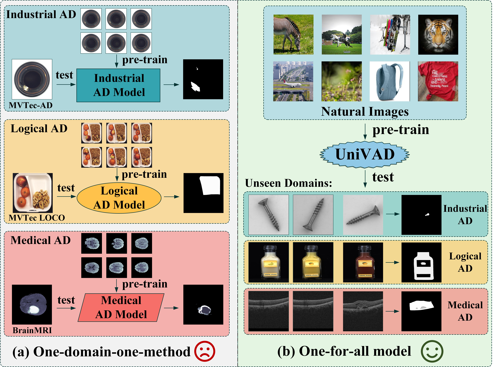

Abstract
Visual Anomaly Detection (VAD) aims to identify abnormal samples in images that deviate from normal patterns, covering multiple domains, including industrial, logical, and medical fields. Due to the domain gaps between these fields, existing VAD methods are typically tailored to each domain, with specialized detection techniques and model architectures that are difficult to generalize across different domains. Moreover, even within the same domain, current VAD approaches often follow a "one-category-one-model" paradigm, requiring large amounts of normal samples to train class-specific models, resulting in poor generalizability and hindering unified evaluation across domains. To address this issue, we propose a generalized few-shot VAD method, UniVAD, capable of detecting anomalies across various domains, such as industrial, logical, and medical anomalies, with a training-free unified model. UniVAD only needs few normal samples as references during testing to detect anomalies in previously unseen objects, without training on the specific domain. Specifically, UniVAD employs a Contextual Component Clustering (C3) module based on clustering and vision foundation models to segment components within the image accurately, and leverages Component-Aware Patch Matching (CAPM) and Graph-Enhanced Component Modeling (GECM) modules to detect anomalies at different semantic levels, which are aggregated to produce the final detection result. We conduct experiments on nine datasets spanning industrial, logical, and medical fields, and the results demonstrate that UniVAD achieves state-of-the-art performance in few-shot anomaly detection tasks across multiple domains, outperforming domain-specific anomaly detection models. The code will be made publicly available.
Video Presentation
Model
UniVAD is the first training-free unified method for Visual Anomaly Detection (VAD) that can detect anomalies across multiple domains, including industrial, logical, and medical images, without domain-specific training. Unlike existing VAD methods that require separate models for each domain, UniVAD leverages a unified approach that detects anomalies using only a few normal samples of the target category during testing.

Comparison between UniVAD and existing methods.
UniVAD incorporates a contextual component clustering module to segment object components and utilizes a component-aware patch-matching module for detecting patch-level anomalies. Additionally, a graph-enhanced component modeling module is used to capture relationships between components, enabling the detection of more complex logical anomalies. Our method demonstrates state-of-the-art performance in few-shot anomaly detection across various datasets, outperforming domain-specific models.

The architecture of UniVAD.
Capabilities
Compared to existing VAD methods that require domain-specific training and separate models, UniVAD can directly detect anomalies across multiple domains with only a few normal samples for reference. We find that the capabilities of UniVAD include but are not limited to (with examples attached at the bottom of this page):
- Industrial anomaly detection and segmentation.
- Logical anomaly detection and segmentation.
- Medical anomaly detection and segmentation.
- Crack Segmentation.
- .... (explore our demo on your own!)
BibTeX
@misc{gu2024univadtrainingfreeunifiedmodel,
title={UniVAD: A Training-free Unified Model for Few-shot Visual Anomaly Detection},
author={Zhaopeng Gu and Bingke Zhu and Guibo Zhu and Yingying Chen and Ming Tang and Jinqiao Wang},
year={2024},
eprint={2412.03342},
archivePrefix={arXiv},
primaryClass={cs.CV},
url={https://arxiv.org/abs/2412.03342},
}
Acknowledgement
This website template is borrowed from the MiniGPT-4 project, which is adapted from Nerfies, licensed under a Creative Commons Attribution-ShareAlike 4.0 International License.